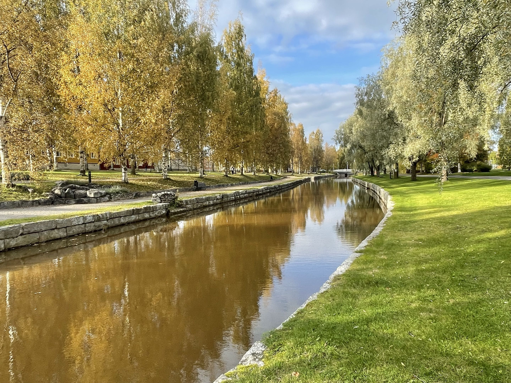

Kokkola
Kokkola kaupunkina
Kokkola sijaitsee Suomen länsirannikolla Pohjanmaalla. Kokkolassa asuu noin 48 000 ihmistä. Asukasluvultaan Kokkola on Suomen 22:nneksi suurin kaupunki. Kokkola on kaksikielinen kaupunki, jossa puhutaan suomea ja ruotsia.
Historia
Kokkola sai kaupunkioikeudet vuonna 1620. Kaupunki on tunnettu historiallisista rakennuksistaan ja kulttuuriperinnöistään. Kokkola on myös merkittävä satamakaupunki, ja sen talous perustuu muun muassa teollisuuteen ja merenkulkuun.
Sunti-joki
Kokkolan halki kulkee Sunti-joki, joka on suosittu ulkoilukohde. Sunti oli alun perin merenlahti, joka muuttui kapeaksi salmeksi maan nousun vuoksi. Joen varrella on kauniita maisemia ja se tarjoaa mahdollisuuksia kalastukseen ja veneilyyn.
